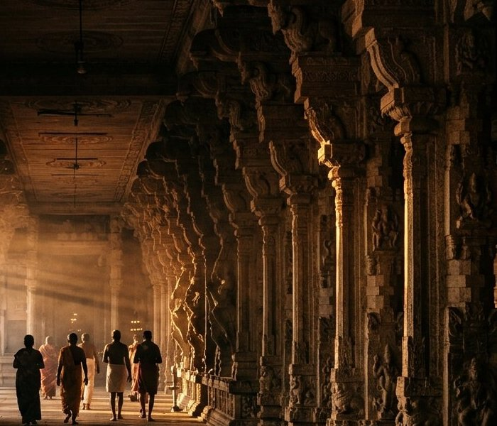

Plan your darshan. Participate in sacred seva.
Find the daily worship schedule, darshan arrangements, seva descriptions and visitor guidance. Please confirm timings before travel, as they may change during festivals.
Temple timings
Replace the sample schedule below with the current timings approved by temple administration.
These times are illustrative from the project brief, not verified current temple timings. Do not publish them as live timings without confirmation.
Common pooja offerings
Abhishekam
Ritual bathing of the deity. Confirm availability, materials and devotee participation rules.
Sahasranama
Recitation of the sacred thousand names. Confirm the day, time and booking process.
Archana
Personalised prayer offering. Confirm name details, fee and receipt requirements.

Before visiting
- Follow temple dress and conduct guidelines
- Check festival-day changes to darshan timings
- Ask about accessibility and senior-citizen assistance
- Use only official booking and payment channels
- Confirm photography and mobile phone rules
Request a pooja booking
Submit your preferred date and worship slot. The temple office verifies availability and confirms through official channels.